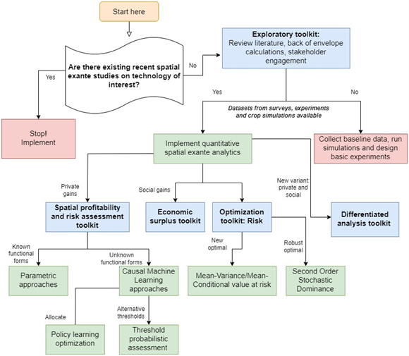

1 Introduction
1.1 Overview
CSISA-EiA Spatial Exante Standard Operating Procedure (SpSOP) is a suite of validated toolkits that use economic theory, econometrics, and mathematical optimization models to target investments of different agronomic innovations at disaggregated spatial scales, as well as evaluating the returns on these investments. The returns are expressed depending on the toolkit as yield gains, profit gains, probability of getting a threshold level of yield gains or profit gains, yield or profit risk, producer surplus, financial indicators like cost benefit ratio and net present value, and willingness to pay measures.
We start with exploratory toolkit which involves literature review, back of the envelope calculations, and stakeholder engagements[1]. In the standard procedures for evaluating agricultural research (as described in Alston et al 1995), this procedure involves using scoring and other short cut approaches. This procedure is not a replacement for the other more objective and data grounded procedures we discuss next. It is a starting point for doing spatial exante work as it guides the nature and scope of toolkits to use next.
The next toolkit in the system assesses whether there are substantial economic gains for a farmer who is either risk agnostic or risk averse to likely adopt the technology. This toolkit assumes that the farmers are individually too small to affect the prices and quantities of other farmers.
In following toolkit, we relax these assumptions to estimate the producer and consumer surplus while considering farmers’ demand and supply price behaviour and equilibrium relationships. The two toolkits presented assume that the technology already exists and that all that remains is to increase its adoption.
In the final toolkit, we present a case of first ascertaining whether there is adoption potential given spatially explicit endowments and whether by adding attributes to the technology, farmers are then more likely to adopt it. We then use that system to compute the economic value of that adoption to the farmers.
How does one choose which toolkits to use? We present next a guide map to choosing the analytical methods given the available data, expertise and time.
[1] Within CSISA and EiA, the CAPTAIN tool (now called PAiCE) is a clear example of this toolkit.
1.2 Guidelines to comprehensive spatial quantitative exante toolkits
This paper has provides a list of spatial quantitative exante toolkits that are used to prioritize potential investments. These toolkits mostly use existing survey data or baseline data that most projects ideally collect prior to implementation.
Figure 1 shows a guidemap to selecting which exante approach to use for a selected study. We categorize the decision steps into four layers. First, one has to conduct a literature review, back of the envelope calculations of structural changes in the economy, and stakeholder engagements. This layer needs to be done regardless of the comprehensive approaches that are later used in the spatial exante assessment. It is possible to stop and start implementing at this point if prior exante studies were already conducted on the topic of interest and at a sufficient scale. In the second layer, one gathers all the necessary datasets required for the exante work. If there is no data, then instead of scaling the interventions, it is best to work with stakeholders to design on station, on-farm experiments, quantitative and qualitative surveys to start gathering evidence to be used for exante.
If survey data exist already, then one needs to start with the spatial profitability and risk assessment toolkit. In this tookit, the researcher needs to ask if the technology in question is sufficiently studied elsewhere such that there are already functional forms to use the parametric approach. If not clear on this then, he/she may use the causal ML based approaches. The researcher may use the spatial Bayesian krigging approach if the targeting is to focus on locations to implement including out of sample. He/she may consider the policy learning optimization approach if he/she is interested in understanding the indicators to use when partitioning who needs to be prioritized beyond the spatial aspects.
If crop simulation and long-term experimental datasets are available, one can use the spatial profitability and risk assessment toolkit as well. But in addition, he/she may be interested in using the evidence from these experiments to suggest new combinations of treatments that should be tested or scaled beyond what is observed to be beneficial. For that, the researcher can use the modern portfolio approaches (i.e., mean-variance optimization or mean-conditional value at risk optimization). If instead he/she is just interested at recommending for each grid the most robust practice for scaling, then he/she can use the willingness to pay bounds approach which recommends the best practice for any risk averse farmer to find it optimal to follow that strategy.
The spatial profitability assessment toolkit and the spatial optimization toolkit will provide an individual assessment of the benefits of. However, one may be interested to understand if this makes sense socially as well given the demand and supply behavioral patterns (i.e., elasticities). The equilibrium displacement modelling framework also called economic surplus approach is the traditional way of assessing producer and consumer surplus for the new agronomic technology. This approach will utilize supply/demand elasticities, the spatially explicit yield gains and cost reduction estimates and the assumed adoption trends to evaluate the returns on investments at a disaggregated level.
What if the new technology is just a variant of an old technology. For example, a new mix of herbicides or a new variety. In most cases, these are not widely adopted to warrant a spatial profitability assessment using observational data. In addition, the performance in agronomic trials will likely be misleading because farmers have not yet learned how to use the technology appropriately. How do we predict whether this new technology is will be adopted and that it's worth investing in. For this, the researcher needs to consider the structural differentiated agronomy toolkit which uses characteristics of the technology and locational characteristics (including farmer demographics) to predict whether the new technology embodying particular traits is worth investing.
As it can be seen from the guidemap, these toolkits can be used in tandem because they give different insights into the likely benefits of investing in a particular technology. In addition, these approaches are not exhaustive. Each of the workflows we have presented have several variants and complementary methods that researchers can explore.

1.3 Target audience
The toolkits can be used by researchers, project managers, and students to conduct exante analyses that guide investments. Our target audience are researchers who are tasked to conduct spatially explicit exante analyses. We thus assume that the researchers have used most of these tools before or are at least aware of them. For those not familiar with the methods, we encourage the reader to go through the suggested references.
1.4 Stylized example: Sowing date use case
We focus on sowing date use case being implemented in India as an exemplar for the exante analytics presented in this SOP. However, we have applied the same techniques for other use cases including: (1) Herbicide integrated weed management in wheat, (2) multiple irrigations in wheat (irrigation scheduling) and short and long duration wheat varieties (varietal choice).
1.5 Replication materials
The replication materials for all the toolkits can be accessed on EiA Exante github page: https://github.com/EiA2030-ex-ante. We use publicly available datasets as such once the repository of interest is cloned, one should be able to replicate all the results in this SOP.